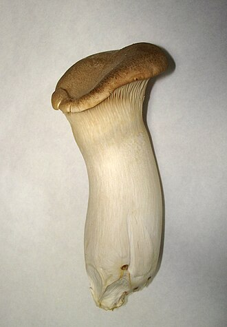

エリンギの生産量 都道府県ランキング
全16都道府県の順位と生産量
エリンギの生産量が全国で最も多いのは長野県で、1万4,519 tです。全国（3万4,386 t）の42%を占めます。

| 順位 | 都道府県 | 生産量 | 全国に占める割合 |
|---|---|---|---|
| 1位 | 長野県 | 1万4,519 t | 42% |
| 2位 | 新潟県 | 1万1,547 t | 34% |
| 3位 | 福岡県 | 1,812 t | 5.3% |
| 4位 | 香川県 | 1,374 t | 4.0% |
| 5位 | 三重県 | 424 t | 1.2% |
| 6位 | 鳥取県 | 320 t | 0.9% |
| 7位 | 熊本県 | 299 t | 0.9% |
| 8位 | 福島県 | 148 t | 0.4% |
| 9位 | 沖縄県 | 110 t | 0.3% |
| 10位 | 宮崎県 | 84 t | 0.2% |
| 11位 | 静岡県 | 30 t | 0.1% |
| 12位 | 群馬県 | 12 t | 0.0% |
| 13位 | 島根県 | 7 t | 0.0% |
| 14位 | 山形県 | 3 t | 0.0% |
| 15位 | 岡山県 | 1 t | 0.0% |
| 16位 | 東京都 | 0 t | 0.0% |
PR

エリンギの生産量の推移（令和3年〜令和7年）
全国の生産量は、令和3年の3万8,344 tから令和7年の3万4,386 tへ、10%減りました。期間中、1位は一貫して長野県です。
| 年 | 全国 | 1位 | 2位 | 3位 |
|---|---|---|---|---|
| 令和7年 | 3万4,386 t | 長野県1万4,519 t | 新潟県1万1,547 t | 福岡県1,812 t |
| 令和6年 | 3万4,639 t | 長野県1万4,822 t | 新潟県1万1,726 t | 福岡県1,799 t |
| 令和5年 | 3万5,863 t | 長野県1万5,696 t | 新潟県1万2,015 t | 福岡県1,703 t |
| 令和4年 | 3万7,798 t | 長野県1万5,962 t | 新潟県1万1,884 t | 福岡県1,788 t |
| 令和3年 | 3万8,344 t | 長野県1万6,434 t | 新潟県1万2,007 t | 福岡県2,148 t |
この数字について
- 分類：きのこの仲間
- 全国の生産量：3万4,386 t
- この数字が表すもの：生産量（生産された重量）
- 調査：特用林産基礎資料 令和7年
- 16県分を調査（調査していない県は順位に入りません）
エリンギの生産量について、よくある質問
- エリンギの生産量が日本一の都道府県はどこですか？
- 長野県です。特用林産基礎資料（令和7年）で1万4,519 tでした。
- エリンギの生産量ランキング2位・3位はどこですか？
- 2位は新潟県（1万1,547 t）、3位は福岡県（1,812 t）です。
- エリンギの生産量ランキング4位・5位はどこですか？
- 4位は香川県（1,374 t）、5位は三重県（424 t）です。エリンギの全16県の順位は上の表のとおりです。
- エリンギの全国の生産量はどれくらいですか？
- 3万4,386 t（令和7年）です。